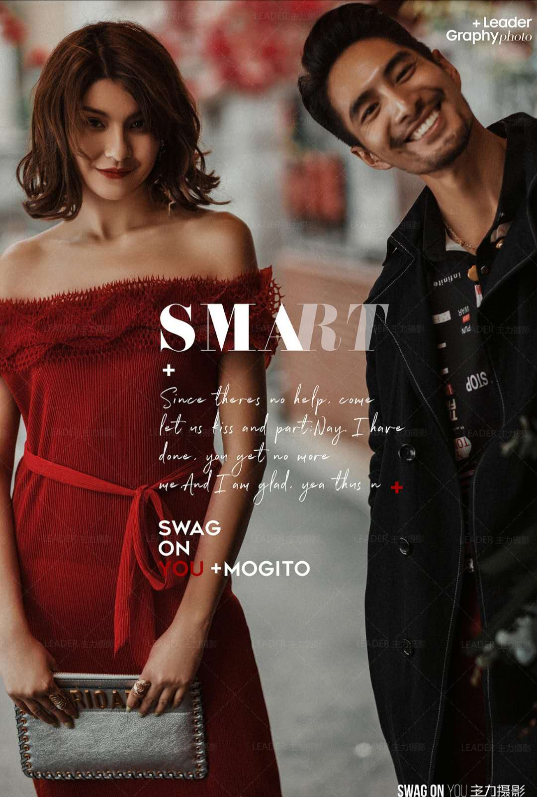
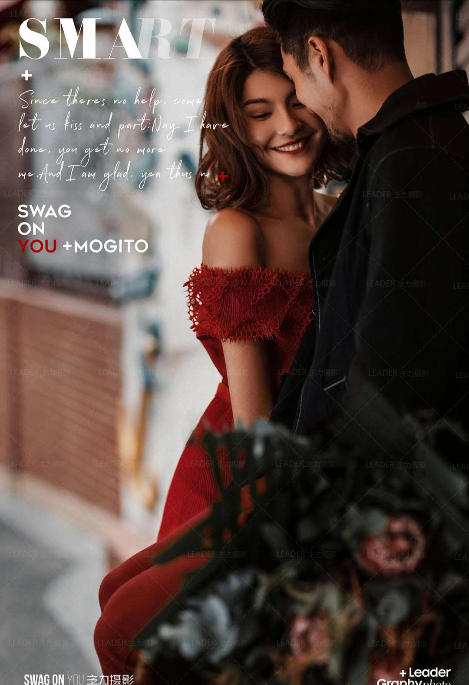
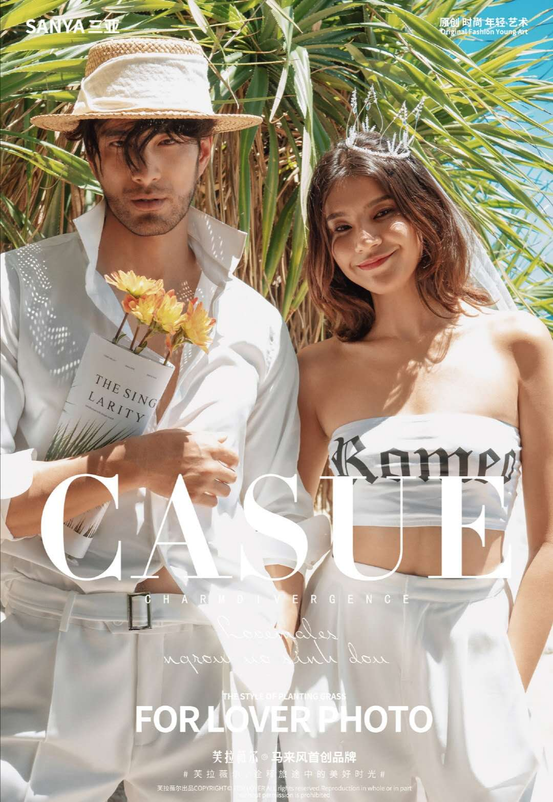
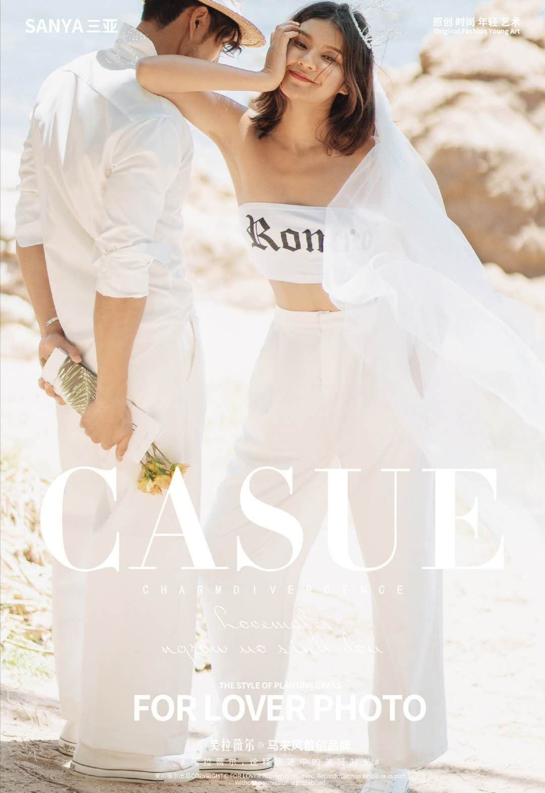
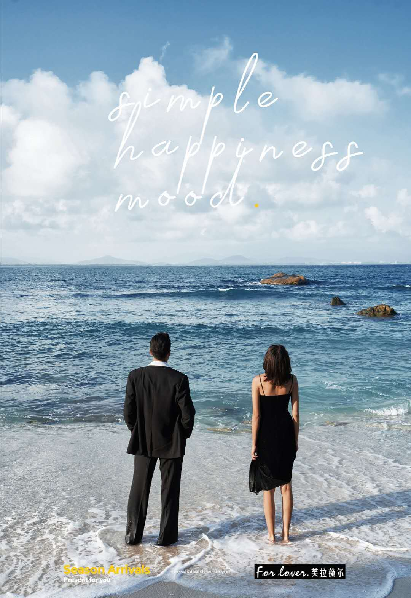
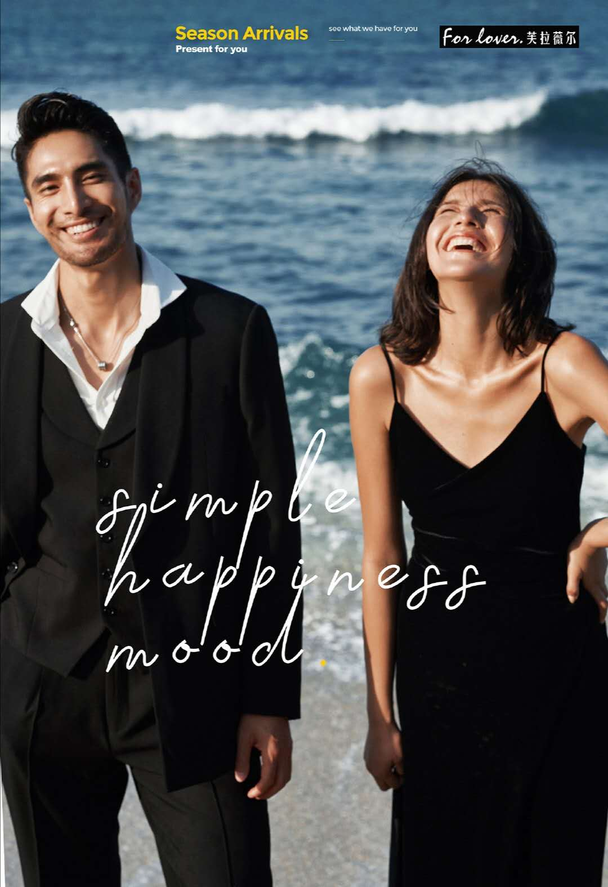
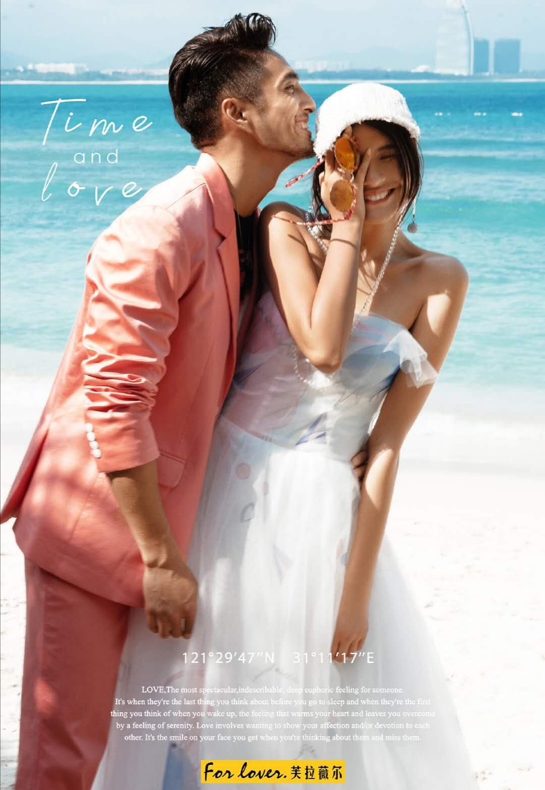
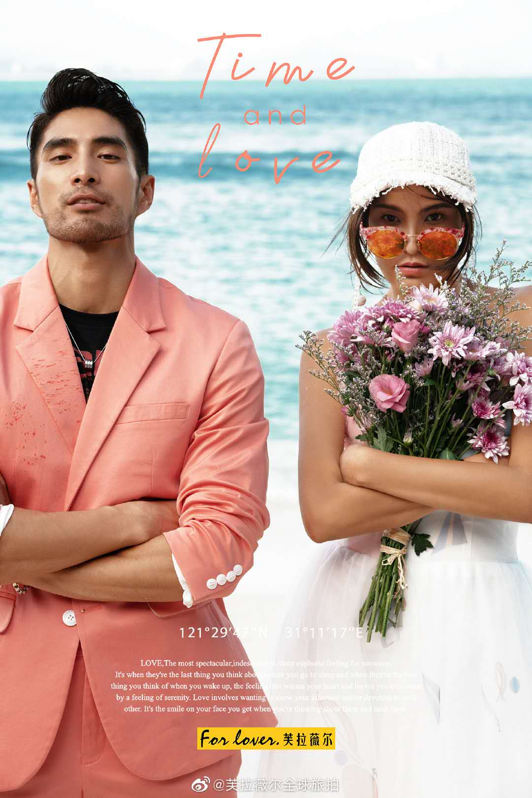

-

-

-

-

婚纱礼服是结婚仪式及婚宴时新娘穿着的西式服饰。婚纱的颜色,款式等视乎各项因素,包括文化,宗教及时装潮流等。 婚纱主要颜色为白色、象牙色、香槟色。但也可根据买家提出的特殊要求进行颜色更换及配饰。
婚纱从剪裁、缝纫、手工都精细于礼服之上,并且在制作工艺上也有所不同,质量上乘。 婚纱的款式大体都带长拖尾,和普通礼服有很明显的区分。鱼尾和贴身款也和礼服有明显区别。 因婚纱制作精细,因此多数以量身定制为主。
公主型婚纱又称A字裙,是一种比较古典的婚纱款式。 线条流畅优美,不仅透着古典的文雅气息,还反映了对形态美的追求。 公主型婚纱适合娇小偏瘦的新娘,使新娘看起来活泼可爱又不失小女人的乖巧。